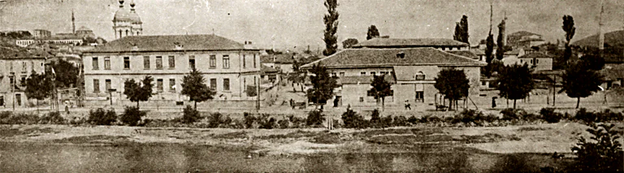
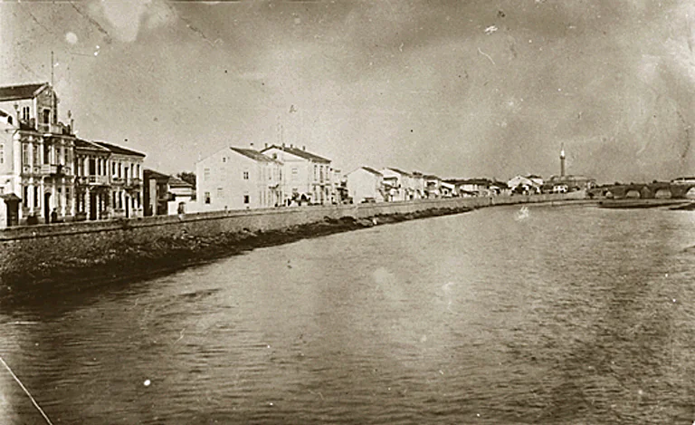
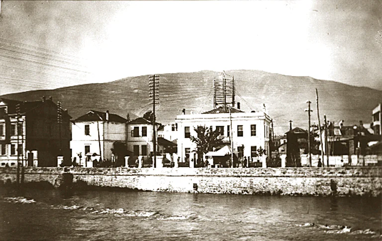
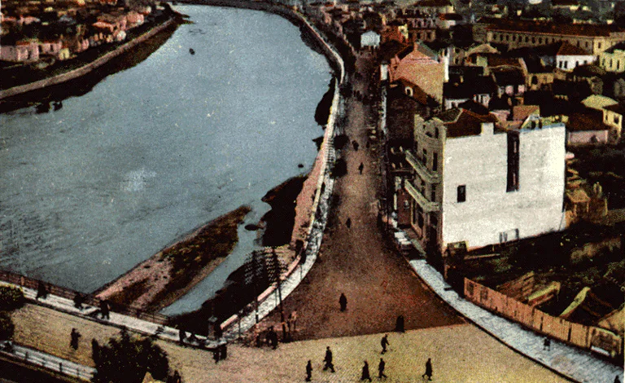
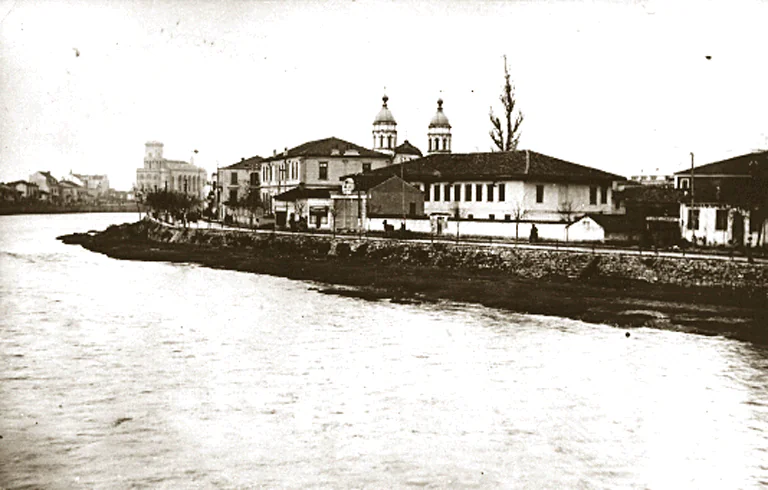
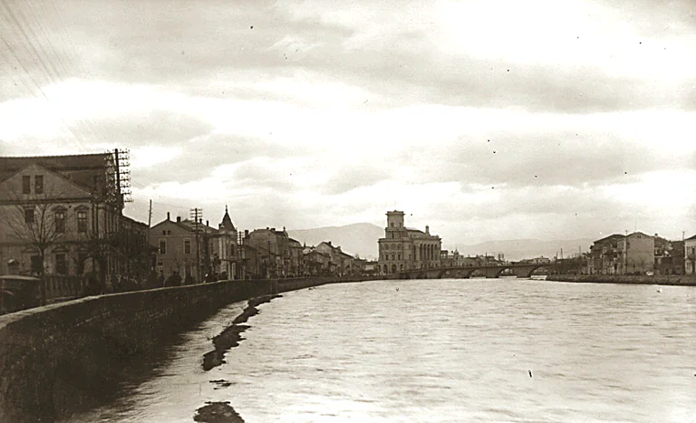
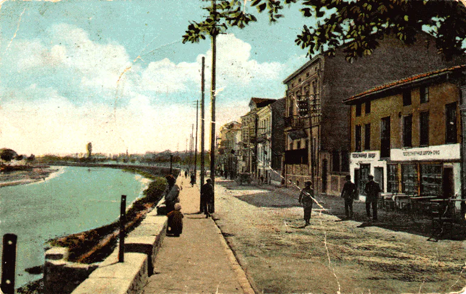

На река Вардар
- Сценарий
- Димитрие Османли, Симон Дракул
- Камера
- Киро Билбиловски
- Година
- 1964
- Времетраене
- 00:16

Кеят „13 ноември“ - 1888 година.

Воденица в горното течение на р. Вардар - края на 19 век.

Въпреки че тази картичка е силно повредена, тя е включена в колекцията, защото е от края на 19 и началото на 20 век и на нея се виждат сгради, които ги има само тук. Вдясно е Османската банка. На преден план е старият чинар, на който през 1689 година е било обесено мъртвото тяло на Карпош. Над него се извисява скопската крепост - Кале. Най-вляво се вижда част от Каменния мост.

Изглед към двата кея на р. Вардар - началото на 20 век.

Скопие през 1902 година - изглед от Каменния мост към дървения мост. Река Вардар е с изградени кейови стени. Забелязват се жилищни и обществени сгради. Вдясно на снимката се забелязва турският театър, а вляво, в самото начало, Бурмали джамия. На заден план е сградата на банката и старата поща.

Изглед към дървеното мостче, стария турски театър и част от скопската крепост - Кале. (началото на 20 век)

Изглед от десния бряг на р. Вардар към скопската крепост - Кале. (началото на 20 век).

Изглед към левия бряг на р. Вардар (кея „Димитър Влахов“) - началото на 20 век. В стената на кея се вижда устието на река Серава.

Дървен мост, преди строежа на железния мост. На заден план са Каменният мост и Бурмали джамия. (края на 19 век)

Началото на 20 век. Османската банка, Скопската митрополия и сградите на левия бряг на р. Вардар, веднага след Каменния мост. На преден план е старият чинар.

Изглед към левия бряг на Вардар към църквата Св. Мина (с два купола) и църквата Св. Богородица (на заден план с един купол). - началото на 20 век.

На преден план са съдебната сграда и старото училище, а на заден план се виждат куполите на църквата Св. Мина - началото на 20 век.

Изглед към двата кея на р. Вардар - началото на 20 век.

Левият бряг на р. Вардар - кеят „Димитър Влахов“ с Османската банка, Митрополията и двата купола на църквата Св. Мина на заден план. (началото на 20 век)

Левият бряг на р. Вардар - кеят „Димитър Влахов“, между Каменния и Железния мост, с жилищни сгради. (началото на 20 век)

Снимката е направена от Каменния мост около 1910 година. Вляво се вижда старият турски театър, а над него скопската крепост - Кале.

Левият бряг на р. Вардар с Еврейската махала и на заден план скопската крепост - Кале. (1910 година)

Снимката е направена от Каменния мост около 1910 година. Вляво се вижда старият турски театър, а над него скопската крепост - Кале.

Скопие при наводнението през 1916 година. Водата стига до сградите. Вдясно се вижда как част от сграда е срутена от наводнението.

Скопие след 1918 година. Двата кея на р. Вардар като надлъжни комуникации, важни за развитието на града. На заден план се вижда Каменният мост с Бурмали джамия. Вижда се оживено строителство на много сгради по кея с разнообразни архитектурни форми, близки до европейската школа.

Скопие преди Балканската война. Кеят на десния бряг на р. Вардар. На заден план се виждат Бурмали джамия и Каменният мост. На преден план е руското консулство и други сгради. Архитектурата е повлияна от европейската архитектурна школа, с елементи на класически, академичен и псевдокласически маниер.

Изглед към десния бряг на р. Вардар със сградите на банката и старата поща между Каменния мост и дървеното мостче - началото на 1920-те.

Изглед към левия бряг на р. Вардар. На преден план са съдебната сграда и старото училище, а на заден план се виждат куполите на църквата Св. Мина. Вдясно от нея е църквата Св. Богородица. - 1920-те.

Изглед към десния бряг на р. Вардар със сградите на банката и старата поща между Каменния мост и дървеното мостче - началото на 1920-те.

Десният бряг на р. Вардар пред Каменния мост. Вляво се виждат сградата на банката и старата поща. Вдясно на картичката се вижда дървеното мостче - около 1920 година.

Изглед към десния бряг на р. Вардар със сградите на банката и старата поща между Каменния мост и дървеното мостче - началото на 1920-те.

Част от левия бряг на р. Вардар - приблизително мястото на днешната сграда на Македонската радио-телевизия. Вижда се минарето на Вардар теке джамия (построена в началото на 16 век) - началото на 1920-те.

Част от левия бряг на р. Вардар - приблизително мястото на днешната сграда на Македонската радио-телевизия. Вижда се минарето на Вардар теке джамия (построена в началото на 16 век) - началото на 1920-те.

Изглед към десния бряг на р. Вардар пред Каменния мост. Средното пространство на кея. Вляво се виждат сградите на банката и старата поща. Вдясно на картичката се вижда дървеното мостче - около 1920 година.

Скопие - част от площада. Вляво се вижда част от Каменния мост, а вдясно е пространството преди строежа на Народната банка. Кеят е направен като улица за движение. На заден план вдясно се вижда мъжката гимназия.

Скопие - част от площада. Вляво се вижда част от Каменния мост, а вдясно е пространството преди строежа на Народната банка. Кеят е направен като улица за движение. На заден план вдясно се вижда мъжката гимназия. - 1930-те

Кеят „Димитър Влахов“ - левият бряг на р. Вардар. - началото на 1920-те

Изглед от Каменния мост към паметника на падналите борци и Османската банка. - 1920-те.

Панорамна снимка на Скопие, по-точно на левия кей на р. Вардар с част от Еврейската махала, Пайко махала и Каменния мост. - 1920-те

Изглед към Скопие от Офицерския дом към Еврейската махала. - 1920-те.

Изглед към десния бряг на Вардар с жилищни сгради. На заден план се виждат Каменният мост и строежът на Офицерския дом. (около 1925 година)

Скопие, 1930-те. Изглед към двата кея. На преден план са старото училище и съдебната сграда, а точно зад тях се виждат двете камбанарии на църквата Св. Мина. На заден план се вижда Офицерският дом преди строежа на Народната банка. Снимката е направена от Железния мост.

Кеят на десния бряг на р. Вардар пред Каменния мост. На преден план е жилищна сграда с дюкяни на партера и входове към пасажа „Ароести“, построен през 1920-те, който е бил малък търговски център със занаятчийски и търговски дюкяни. (При катастрофалното земетресение през 1963 година на това място загиват много хора.) На заден план се виждат Земеделската банка, Офицерският дом, Народната банка и Каменният мост. (1930-те)
Кеят „13 ноември“ с жилищни сгради, част от Каменния мост и Офицерския дом - 1920-те.

Изглед към кея „13 ноември“ на десния бряг на р. Вардар, Каменния мост и Офицерския дом - снимано около 1927 година.

Част от площада пред Каменния мост и двата бряга на р. Вардар. Вляво на заден план се виждат църквата Св. Мина с двата купола и малко по-вляво църквата Св. Богородица. Кеят е благоустроен, с електрическо осветление и зеленина. (1925-1930 година)

Десният бряг на р. Вардар, от дървеното мостче към парка - 1930-те.

Кеят „13 ноември“. Изглед към Каменния мост и Офицерския дом - края на 1930-те.

Кеят на левия бряг на Вардар пред Каменния мост с жилищни сгради в Еврейската махала. На заден план се вижда Османската банка - около 1930 година.

Изглед от Каменния мост на р. Вардар към дървеното мостче и двата бряга на реката. Вдясно е Народният театър, а вляво сградата на банката и старата поща. - 1930-те

Изглед към квартал „Буняковец“. Коритото на р. Вардар е укрепено с насипи. - 1930-те

Левият и десният бряг на р. Вардар. Снимано от Каменния мост. Средното пространство на кея от двете страни на Вардар. - около 1930 година

Десният бряг на р. Вардар. Кей „13 ноември“. - около 1930 година

Скопие, 1930-те. Изглед към двата кея. Изглед от Железния мост на Вардар към двата кея, застроени с жилищни и обществени сгради. На преден план вдясно са старото училище, съдебната сграда и двете камбанарии на църквата Св. Мина. На заден план са Офицерският дом и Народната банка.

Изглед към кея „13 ноември“ на десния бряг на р. Вардар, Каменния мост и Офицерския дом - снимано около 1930 година.

Изглед към двата кея на р. Вардар и железния мост. - 1950-те

Изглед към двата кея на р. Вардар и бетонния мост. - 1950-те.

Десният бряг на р. Вардар след каменния мост, сниман преди катастрофалното земетресение на 26 юли 1963 година. На заден план се виждат Офицерският дом и Народната банка.

Кеят на десния бряг на р. Вардар. Делово-жилищен комплекс или „Кулите на Вардар“ (проектант арх. Александър Серафимовски). Снимката е направена през 1960-те, преди катастрофалното земетресение на 26 юли 1963 година.

Десният бряг на р. Вардар с Каменния мост, кулите край Вардар и Гранд хотел „Скопие“, сниман непосредствено след катастрофалното земетресение на 26 юли 1963 година и преди корекцията на р. Вардар. Корекцията е извършена в периода 1965 - 1968 година.

Изглед към десния бряг на р. Вардар. Арката на преден план е част от каменния мост; снимката е от 1950-те.

Изглед от левия бряг на р. Вардар към Каменния мост. На заден план се виждат Кулите на Вардар. - 1970-те

Изглед към днешната централна поща - Телекомуникационен център (построен 1974 - 1980, проектант Янко Константинов) и кея пред нея.

 Акведукт4 картички
Акведукт4 картички Кале30 картички
Кале30 картички Мостове60 картички
Мостове60 картички Кей58 картички
Кей58 картички Площад46 картички
Площад46 картички Сгради66 картички
Сгради66 картички Християнски храмове19 картички
Християнски храмове19 картички Мюсюлмански сгради33 картички
Мюсюлмански сгради33 картички Офицерски дом29 картички
Офицерски дом29 картички Театър28 картички
Театър28 картички Железопътна гара13 картички
Железопътна гара13 картички Училища36 картички
Училища36 картички Паркове12 картички
Паркове12 картички Пазари18 картички
Пазари18 картички Улици38 картички
Улици38 картички Панорама I60 картички
Панорама I60 картички Панорама II30 картички
Панорама II30 картички Колажи55 картички
Колажи55 картички Наводнения9 картички
Наводнения9 картички Земетресение27 картички
Земетресение27 картички Скопие 200026 картички
Скопие 200026 картички